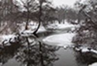
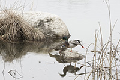
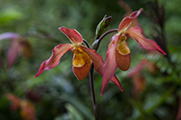
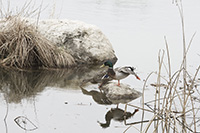
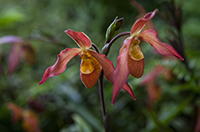
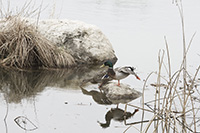
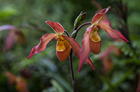

Some of my picture -


 



After my kids grow up and leave the house, I have more time. I spend more time on photography. Walking in a park, observing flowers, birds, landscape and people, capturing on interesting scenary to my camara is one thing I usually do on my spare time. The following are some pictures I took in my recent years.

